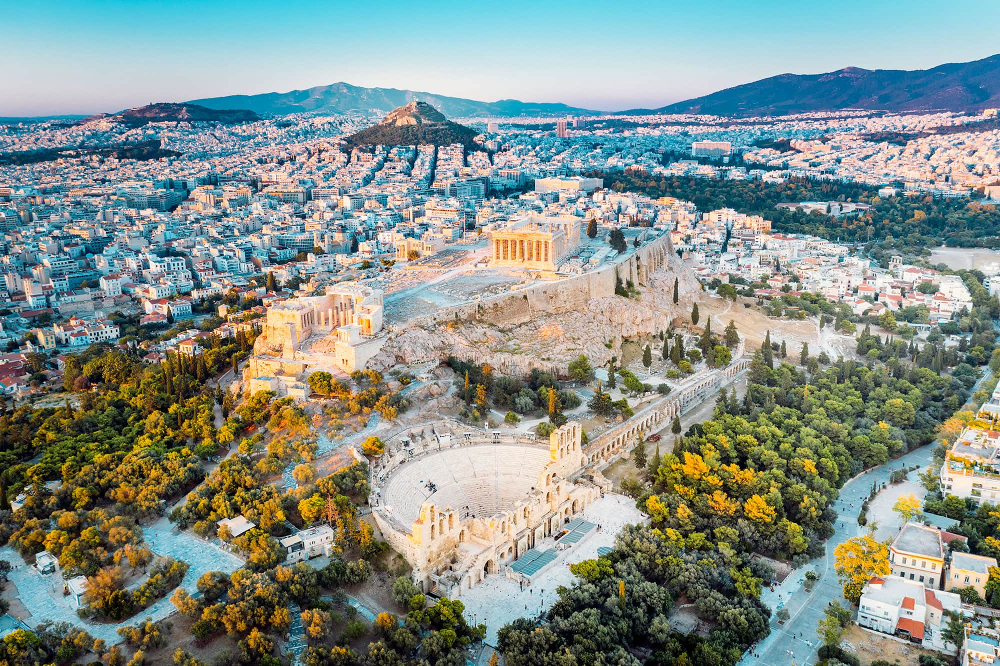
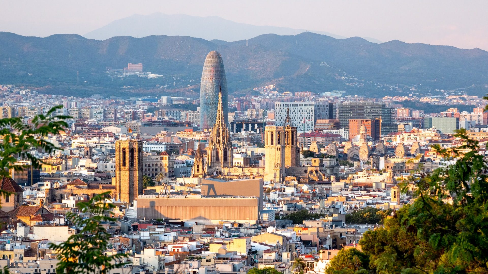

Vendet më të Bukura në Jug të Evropës
Riviera Shqiptare

Shijoni plazhet e pacenuara dhe qytetet e bukura të Riviera Shqiptare, të njohura për ujërat e tyre kristal dhe jetën vibrante të natës.
Berati
I njohur si "Qyteti i Një Mijë Dritareve," Berati është famous për arkitekturën e tij antike dhe pamjet mahnitëse mbi lumin Osum.
Shkodra
Kryeqyteti kulturor i Shqipërisë, Shkodra ofron histori të pasur, peisazhe të bukura dhe liqenin e mrekullueshëm të Shkodrës.
Cinque Terre, Itali
Një grup pesë fshatrash ngjitur me bregdetin, Cinque Terre është i njohur për shtëpitë e tij shumëngjyrëshe dhe peizazhet fantastike detarë.
Santorini, Greqi

Një nga ishujt më të njohur në botë, Santorini është i famshëm për ndërtesat e tij të bardha dhe perëndimet mahnitëse të diellit.
Dubrovnik, Kroaci

Një qytet i bukur bregdetar, Dubrovnik është i njohur për muret e tij historike dhe peizazhin e mrekullueshëm të detit Adriatik.
Athina, Greqi
Një qytet historik, Athina ofron monumente të jashtëzakonshme si Akropoli dhe një atmosferë të gjallë kulture.
Barcelonë, Spanjë
Një qytet plot ngjyra dhe art, Barcelonë është e njohur për arkitekturën e saj unike, si Sagrada Família.
Siena, Itali
Një qytet tërheqës mesjetar, Siena ofron një shikim të mrekullueshëm të historisë dhe arkitekturës italiane.
Split, Kroaci
Aty ku historia takon plazhin, Split është i njohur për Pallatin e Dioklecianit dhe plazhet e bukura.
Positano, Itali
Një nga destinate më të njohura në Amalfi, Positano është i njohur për shtëpitë e tij të ngjyrave dhe rrugët e ngushta të bukura.
Valencia, Spanjë
Një qytet modern dhe historik, Valencia është e njohur për festivalet e saj dhe arkitekturën futuriste, si qyteti i arteve dhe e shkencave.
Malta

Një arkipelag mesdhetar, Malta ofron një përzierje të mrekullueshme të kulturës, historisë, dhe plazheve të mrekullueshme.
Ragusa, Itali
Një qytet historik në Sicili, Ragusa është i njohur për arkitekturën barok dhe pejsazhin e tij të mrekullueshëm.
Chania, Greqi
Kryeqyteti i Kretës, Chania ofron një breg të mahnitshëm dhe një qytet të lashtë me influenca veneciane.
Porto, Portugali

Një qytet që ofron kulturë të pasur dhe shijen e verës port, Porto është një destinacion popullor për udhëtarët.
Nice, Francë

I njohur për plazhet e tij të bukura dhe klimën e ngrohtë, Nice është një destinacion i njohur në Rivierën Franceze.